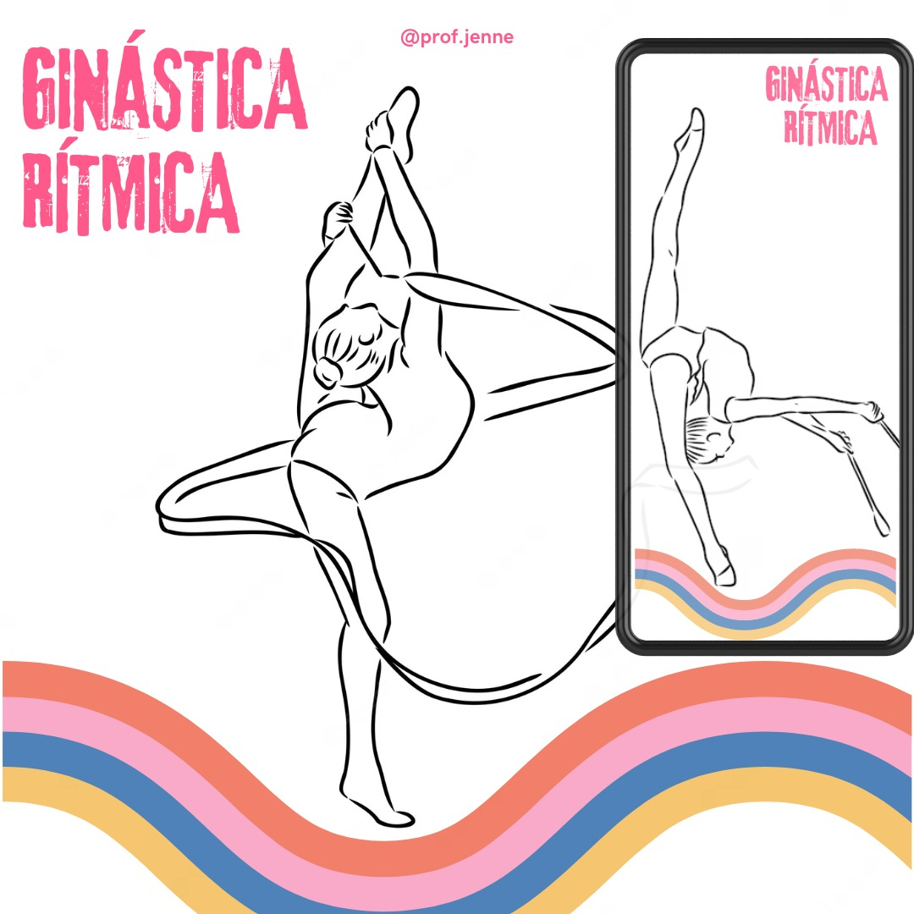

Os Benefícios Transformadores da Ginástica para a Saúde Física e Mental

1. Melhora da Saúde Cardiovascular:
A ginástica, seja ela aeróbica ou anaeróbica, contribui significativamente para o fortalecimento do sistema cardiovascular. Atividades como corrida, saltos e exercícios aeróbicos ajudam a aumentar a circulação sanguínea, reduzindo assim o risco de doenças cardíacas e melhorando a saúde do coração.
2. Fortalecimento Muscular e Ósseo:
A variedade de movimentos na ginástica trabalha diferentes grupos musculares, promovendo o desenvolvimento muscular equilibrado e a resistência. Além disso, exercícios de impacto, como a corrida, auxiliam na densidade óssea, prevenindo doenças como a osteoporose.
3. Controle de Peso e Composição Corporal:
A ginástica é uma ferramenta eficaz para quem busca manter ou perder peso. A queima de calorias durante os treinos contribui para o controle do peso corporal, enquanto a combinação de exercícios aeróbicos e de resistência ajuda na definição muscular.
Redução do Estresse e Ansiedade:
A prática regular de ginástica é conhecida por ter efeitos positivos na saúde mental. A liberação de endorfinas durante o exercício ajuda a reduzir o estresse, a ansiedade e a melhorar o humor. Além disso, a ginástica proporciona um tempo dedicado ao autocuidado, promovendo relaxamento.